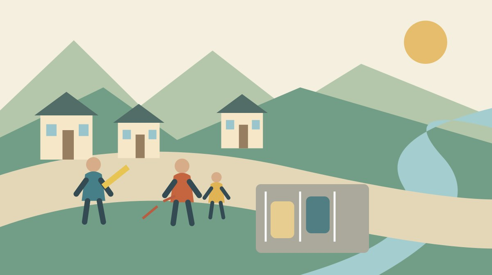

森のまつり交通規制2026｜車で行く前の確認

Q. 森のまつりに車で行くなら、何を確認すればいい？
A. 2026年の森のまつりは11月6〜8日。森町観光協会の当年版交通規制図で、訪問日の規制時間、無料駐車場、駐車後の徒歩経路を確認します。無料は空きの保証ではありません。送迎や帰りの集合も家族で決め、出発前に公式案内を再確認してください。
まず駐車後の移動まで考える
森のまつりの交通案内を支えるのは、現地で規制や誘導を担う人たちです。祭りを見る家族の移動と、そこで暮らす人の出入りが重なる日でもあります。訪ねる側が図を一度読んでおくことは、その場で案内する人の負担を減らす準備になります。
私、大石浩之（磐田市／不動産業）は、車で近くまで行けることと、家族が無理なく到着できることを分けて考えます。駐車場に入った後も、歩く道、合流する場所、帰りの時間が残ります。不動産の立地を見るときと同じように、入口だけで移動を評価しない視点です。
この記事は2026年10月23日に確認した森町観光協会の案内を基にしています。訪問日は11月6日、7日、8日のどれかを先に決めてください。三日間をひとまとめにして「この道は通れる」と覚えると、日付ごとの規制時間を読み落とします。
今日の作業は、家族全員の旅程を完成させることではありません。当年版の図を開き、利用候補の駐車場から目的地までの徒歩経路を一本確かめることです。歩く部分を考えてから、車で向かう道を組み立てる順序にします。
公式の交通規制図には何が載っているか
森町観光協会は2026年10月21日、「森のまつり交通規制・駐車場等について」を掲載しました。本文には令和8年11月6日（金）〜8日（日）の開催を明記しています。掲載画像には無料駐車場、秋葉バス停、仮設公衆トイレの位置も示すと説明しています。
掲載された「令和8年度『森のまつり』交通規制図」には、色ごとの規制日と時間の表があります。図の凡例は歩行者用道路について車両通行禁止と記しています。同じ色の線を地図で探し、表の日付と時刻を合わせて読む形式です。色だけを見て通れる時間を決めないでください。
図は駐車場を示す記号に加え、三島神社周辺の拡大図も載せています。舞児還しの際の注意も別枠で示されています。道路全体の情報と、特定の場面での立入りの注意が一枚に重なっています。縮小した画像を眺めるだけで、すべて読めたとは考えない方が安全です。
私は、交通規制図が車の運転者だけの資料ではない点に注目します。バス停とトイレも描かれているため、降車後の家族の動きにも使えます。車を停める場所だけ丸で囲んで終わると、この図が持つ生活側の情報を半分置き去りにしてしまいます。
公式本文は、車で来る場合には各所の交通規制に従い、駐車場を利用するよう求めています。一方、今回確認した本文からは、満車時の案内方法や駐車台数を確定できませんでした。無料駐車場の記号は、いつ行っても空いているという約束ではありません。
良い点｜車と徒歩を一枚でつなげられる
2026年版の交通規制図の良い点は、規制時間と移動に使う場所が同じ図にあることです。別々の情報を探し回らず、駐車候補と歩く方向を照合できます。日程を明記した公式の掲載ページがあるため、家族へ同じ資料を渡せる点も助かります。
私は、家族の中で運転する人だけが情報を持たずに済むことを評価します。歩く側が図を見れば、子どもと一緒に歩く距離や休憩の入れ方を話せます。運転役に駐車、送迎、連絡を全部任せる予定から、一つずつ役割を分けるきっかけになります。
トイレの位置が示されることも、同行者にとって具体的な利点です。利用できる設備の詳細を図から勝手に補うことはできませんが、位置を確認する入口はあります。必要な設備に条件がある場合は、場所を特定してから公式の確認先に尋ねられます。
祭り期間のバス移動については、小國神社開運線の迂回を整理した記事も関連します。車で向かう人とバスで向かう人が別々なら、双方の降りる場所を同じ地図に記します。ただし、その記事の条件を他の路線へ広げないでください。
注文したい点｜無料の先にある条件を知りたい
公式本文だけでは、駐車場が満車になった際の誘導や、各駐車場からの歩行条件は分かりません。台数、路面、段差、入口の場所などは別の確認が残ります。ここを未確認のままにして「家族連れでも安心」と言い切ることは、私は避けたいと思います。
私は、訪問者が判断しやすいよう、利用条件を文字でも確認できると助かると考えます。画像が小さく見える端末や、読み上げで情報を得る人もいます。規制日、時間、駐車場名を文字でたどれる案内は、図を作る人の仕事をより多くの人へ届ける方法です。
ただ、私には案内を作る側の人数や作業時間が分かりません。更新するページを増やせば、変更時の確認先も増えます。細かな説明を求めるほど担い手の負担が増えるのではないか、という迷いはあります。質問する側も、公開済みの内容を読んでから聞く順番を守りたいです。
家族で連絡する人を一人決め、分からない点を一件に絞る方法を私は勧めます。「駐車場の場所を全部教えて」ではなく、「この候補の利用条件を確認したい」と場所を示します。回答は家族で共有し、同じ質問を繰り返さないよう記録します。
車の経路と、歩く経路を別々に確かめる
祭りの日の移動計画では、出発地から駐車場までと、駐車場から目的地までを分けて確認します。道路の規制図は、その二つをつなぐ資料です。目的地の住所だけをナビに入力すると、駐車後の歩行部分は家族の予定から抜けたままになります。
最初に同行者へ、歩くことについて不安があるかを聞きます。短い距離でも荷物や体調によって負担は変わります。ここで一律の徒歩分数を作らず、ご家族が普段歩ける範囲を基準にしてください。現地の経路が未確認なら、判断を保留する欄を残します。
次に目的地と駐車候補の間にある規制表示を確認します。車では進めない道でも、徒歩の案内は別にある場合があります。逆に、人が歩いているから好きな場所を通れるとも限りません。図の注意と当日の誘導を優先し、私有地を近道として使わない予定にします。
町内へ入るまでの道路も別に確かめます。県道と町道の通行止め情報の調べ分けは、祭りの規制図だけでは確認できない区間の入口になります。工事などの情報と祭礼の規制を混同せず、自分が通る道路について照合してください。
私は、寄り道を増やす前に帰路を一度引く方がよいと考えます。行きに通った道が帰りの時刻にも同じ条件とは限りません。出発時刻と帰る時刻を一緒に図へ添えると、往復で読む必要のある箇所が見えてきます。これは遠方からの帰省でも同じです。
送迎と別行動は、合流までが一つの予定
家族の送迎では、降ろす場所が確認できて初めて車の予定を決められます。目的地の近くへ行けばどこかに停められる、という前提は置きません。今回の公式本文は、自由に乗降できる場所を指定していません。規制区域の中への送迎を当然の選択肢にしないでください。
同行者が別行動をするなら、連絡する時刻と再集合の目印を先に決めます。「入口」「橋の近く」だけでは、別の場所を思い浮かべることがあります。地図で同じ場所を指し、歩く側と迎えに行く側が、それぞれ到着できる条件かを確かめます。
通信や電池に頼り切らない準備もできます。紙に目的地、駐車候補、家族の連絡先を書いておけば、画面が使えないときに説明できます。紙の記録を使う場合も、更新日と訪問日を一緒に書きます。前年の紙を今年の案内として持ち出さないためです。
私は、合流がうまくいかなかった場合の行動を一つ決めたいと思います。別の場所へ次々移ると、探す人と待つ人がすれ違います。待てる場所を勝手に指定するのでなく、公式の案内と現地の状況に従い、家族内の連絡順だけ先にそろえておきます。
公共交通に切り替える前にも確認がある
森町公式「森町の公共交通について」は、町営バス、地域タクシー、公共交通以外の交通手段、鉄道などのリンク集を分けて案内しています。別ページの「鉄道・民間路線バス・タクシー リンク集」には、天竜浜名湖鉄道と秋葉バスサービスの確認先があります。
車を使わない予定へ変える場合は、この入口から運行主体の最新情報へ進みます。地域タクシーの案内があることと、来訪者がその日に自由に使えることは同じではありません。交通手段の名前だけで代替を決めず、対象、運行日、予約の要否を個別に確認します。
バスや鉄道で向かうときも、帰りの便まで見てから出発します。終える時間を決めないまま行くと、同行者の体力と交通の予定を現地で調整することになります。私は、観覧時間を短くする選択も残しておく方が、移動を担う家族への無理が少ないと考えます。
日常の移動条件を確かめる考え方は、森町で一日の移動を試す記事にも通じます。ただし、祭りの日の混雑や規制を、普段の暮らしやすさの評価へそのまま使うことはできません。特別な日と通常の日の記録は分けて残します。
対案・結論｜今日、一本の徒歩経路を残す
森のまつりへ車で向かう準備は、2026年版の図を家族で共有するところから始められます。訪問日、目的地、駐車候補を一つずつ記し、駐車後に歩く道を確かめます。道路名や入口が読み取れない部分は、推測して線をつながず未確認として残してください。
家族用の記録には、図を確認した日、公式ページのURL、帰る目安の時刻も添えます。外出の条件を変えたときに、何を見直す必要があるか分かります。目的地が変わったなら、車の道だけでなく徒歩経路も引き直すという使い方です。
当日は出発前に公式案内を開き直します。図を保存したことは、更新の確認まで済んだことにはなりません。現地ではその時点の誘導に従ってください。この記事も交通規制を許可したり、駐車場所を確保したりするものではなく、確認順を整理するための資料です。
私は、予定を詰めることより、引き返せる余地を残す方を選びます。駐車できない、歩くのが難しいと分かったときに、現場の人へ特別扱いを求めず予定を変えられる準備です。楽しむ時間を支える人への敬意は、出発前の小さな段取りにも表れます。
祭りの案内を家族や同僚へ伝える方は、多文化交流サロンの祭り見学と申込みで、通常回と異なる集合・受付条件を確認できます。
大石の視点｜立地は駐車場の先まで続く
森地区の祭りを訪ねるとき、私は駐車場の有無だけで移動を判断しません。車を降りてから誰がどこを歩き、帰りにどう合流するかまでが、一つの立地条件だと考えます。無料駐車場の表示だけで家族の外出を完成させない。この線は明確に引きます。
これは、私が今回の来訪準備を考えるうえでの意見です。現地で家族を案内した実話として書いているのではありません。家と道をつないで考える不動産実務の視点から、歩く人の都合が運転の計画に埋もれないようにしたいと考えています。
今日決めるのは、訪問そのものの結論でなくても構いません。家族が使う公式図と、確認する徒歩経路が一つそろえば前進です。地域が用意した案内を読み、足りない部分を具体的に確かめる。その手順なら、訪ねる側と迎える側の双方に無理を積み上げずに済みます。
よくある質問
利用前に確認したい疑問を、公式案内の範囲で整理します。
無料駐車場なら必ず停められますか？
無料駐車場の案内は、来場時の空きを保証するものではありません。森町観光協会の2026年版の図で位置と規制時間を確認してください。今回確認した本文では台数や満車時の誘導方法までは分かりません。駐車できない場合も無断駐車はせず、現地の誘導に従い、家族で予定を変更できる余地を残します。
家族を会場の近くまで車で送れますか？
会場近くまで送れるとは一律に判断できません。公式図には車両通行禁止の区域と時間が示されています。送迎でも規制を前提に経路を組み、停車や乗降ができる場所を勝手に決めないでください。歩行に条件がある家族は、駐車後の道も先に確認します。未確認の場所へ向かい、現場で特別扱いを求める予定は避けます。
古い交通規制図を使ってもよいですか？
2026年の訪問には、令和8年度と表示された当年版を使います。森町観光協会は10月21日付で11月6〜8日の図を掲載しています。過去の図では今年の規制時間や場所を確定できません。保存するときは訪問日と確認日を添え、出発前にも公式ページを確認してください。保存済み画像だけで更新確認を終えないようにします。
公式情報源
以下の一次情報を2026年10月確認。本文確認日：2026年10月23日。
制度・運行・開催条件・数値は変わる場合があります。利用直前に公式情報を確認してください。個別の利用条件は運行主体・主催者へ、専門的な判断は担当窓口や専門家へご相談ください。